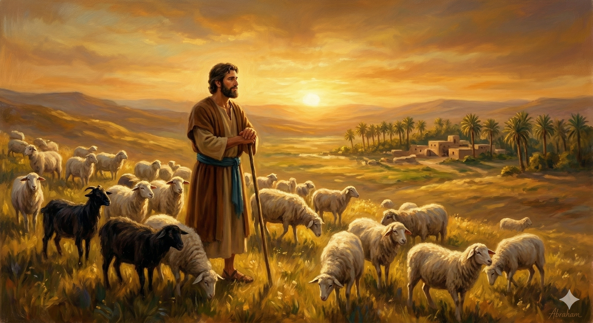

우물가에서 라헬을 처음 만나는 야곱 — 창세기 29:10–11
야곱이 라헬을 보고 그의 외삼촌 라반의 딸이요 그의 외삼촌 라반의 양인 줄 알고 나아가 우물 아귀에서 돌을 굴려 그 외삼촌 라반의 양 떼에게 물을 마시우고 야곱이 라헬에게 입맞추고 소리 내어 울며 … 야곱이 라헬을 위하여 칠 년 동안 라반을 섬겼으나 그를 사랑하는 까닭에 칠 년을 며칠 같이 여겼더라 — 창세기 29:10–11, 20
벧엘에서 하나님을 만나고 하란으로 향한 야곱은 낯선 땅에서 우물가의 목자들을 만납니다. 그곳에서 외삼촌 라반의 딸 라헬이 양 떼를 몰고 왔습니다. 성경은 이 장면을 세밀하게 묘사합니다. 야곱이 라헬을 보는 순간 홀로 무거운 우물 돌을 굴려 양 떼에게 물을 먹입니다. 처음 만난 여인을 위해 힘을 다한 것입니다. 도망자였던 야곱이, 고향도 재산도 잃은 야곱이, 낯선 땅에서 사랑을 만났습니다. 눈물을 흘리며 입을 맞추는 이 장면은 성경 속 가장 인간적이고 아름다운 첫 만남 중 하나입니다. 하나님은 쫓겨난 자에게도 사랑을 허락하십니다.
야곱은 라헬을 얻기 위해 칠 년을 일하겠다고 약속했습니다. 그리고 그 칠 년을 며칠 같이 여겼다고 성경은 기록합니다. 이것은 단순한 열정의 이야기가 아닙니다. 사랑이 시간을 이긴다는 진리입니다. 기다림이 고통이 아니라 기쁨이 될 수 있는 것은, 그 끝에 사랑하는 대상이 있을 때입니다. 야곱의 칠 년은 인내의 기간이었지만, 동시에 사랑이 영글어가는 시간이었습니다. 그리고 이 이야기는 더 깊은 신학적 의미를 담고 있습니다. 하나님이 우리를 위해 기다리시는 사랑, 우리를 얻기 위해 값을 치르신 그 사랑의 그림자가 야곱의 칠 년 안에 담겨 있습니다.

7년을 며칠 같이 여긴 야곱 — 사랑이 세월을 이기다
야곱의 칠 년이 가르쳐 주는 것은 기다림의 아름다움입니다. 우리 시대는 기다림을 잃어버렸습니다. 빠르게 얻고, 빠르게 바꾸고, 빠르게 포기합니다. 그러나 가장 소중한 것들은 언제나 시간을 요구합니다. 신앙도, 관계도, 인격도 기다림 속에서 깊어집니다. 야곱이 칠 년을 며칠 같이 여길 수 있었던 것은 목표가 분명했기 때문입니다. 우리는 지금 무엇을 위해 기다리고 있습니까? 그 기다림에 사랑이 있습니까?
또한 이 이야기는 상처 입은 자에게도 하나님이 선물을 예비하신다는 것을 보여줍니다. 속임수로 장자권을 빼앗고, 형의 분노를 피해 도망친 야곱. 그 실패와 수치의 여정 한가운데서 하나님은 아름다운 만남을 준비하고 계셨습니다. 지금 내 삶이 뒤엉키고 도망치는 것 같아도, 하나님은 그 여정의 어느 우물가에 선물을 놓아두셨습니다. 눈을 들어 그 우물가를 바라보십시오.
"칠 년이 며칠 같았던 것은 사랑이 있었기 때문입니다.
당신의 기다림에는 무엇이 있습니까?
사랑하는 것을 향한 기다림은 결코 낭비가 아닙니다."